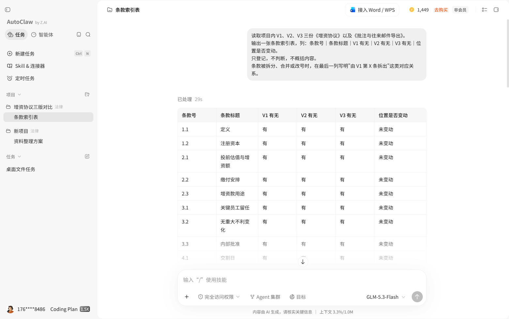
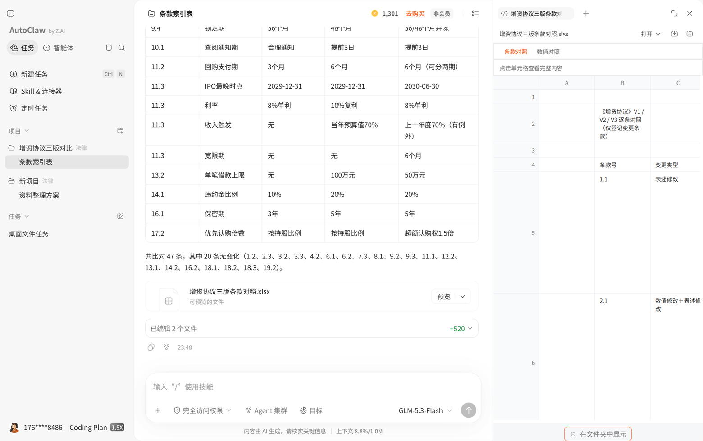
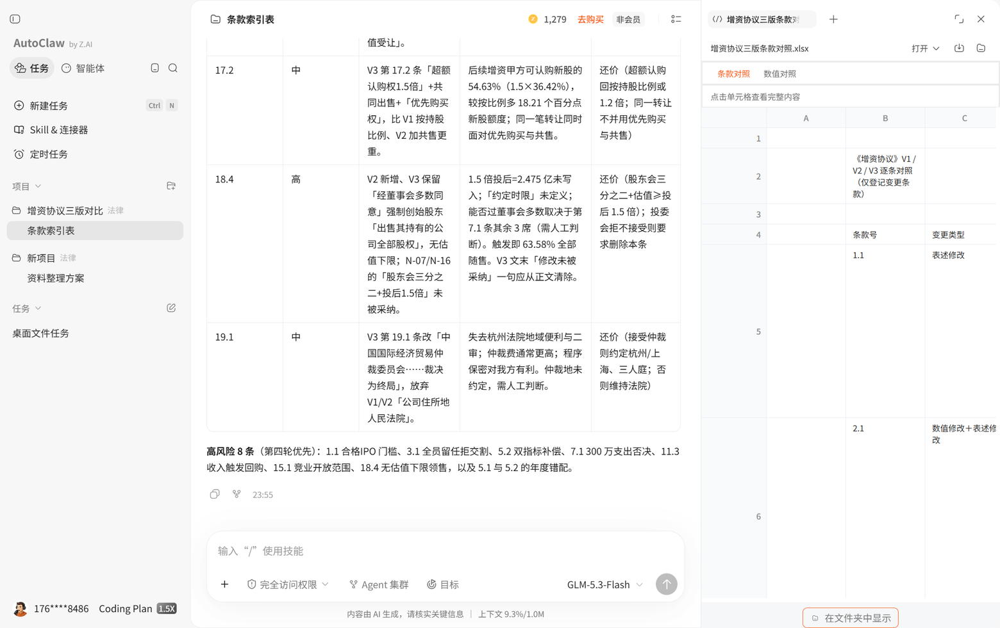
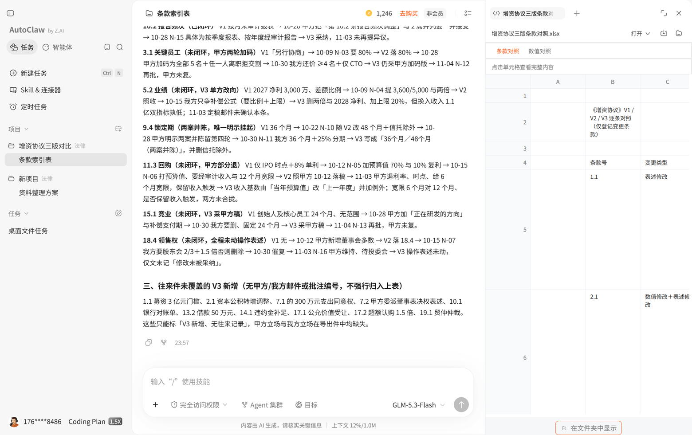
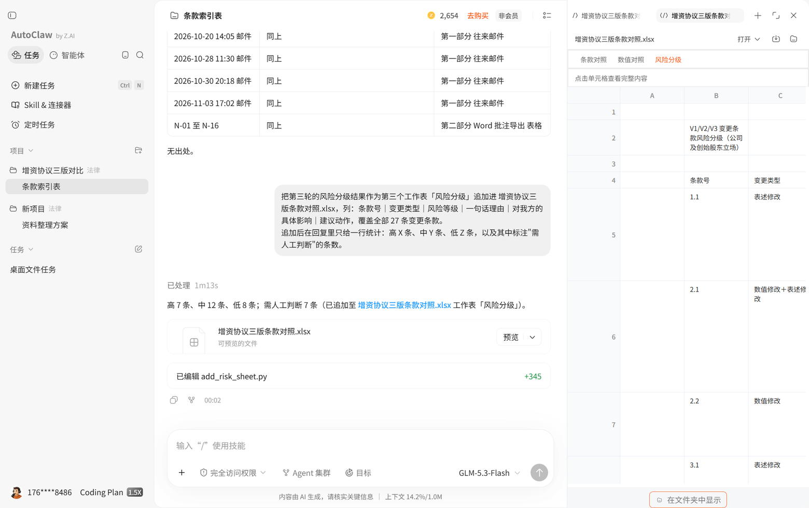
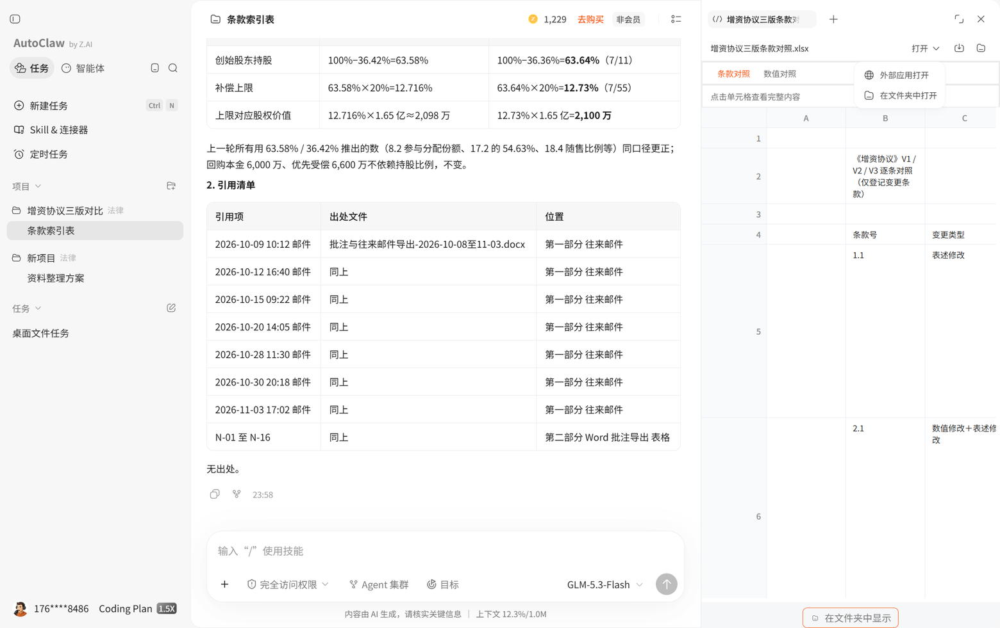

01 任务背景
先说清楚这份东西最后要给谁用、错在哪会出事。
一家做工业视觉的公司准备签 A 轮。投资机构先后发来三版《增资协议》草案，中间夹着 16 条批注和 7 封往来邮件。律师按传统做法要做的，是把三版逐条读一遍、标出改了什么、判断哪些改动对创始方不利、再把还没谈拢的列成清单带到第四轮桌上。
难点不在读，而在漏：条款会挪位置、会拆成两款、会把"1.0 倍"写成"出资额的 100%加 20%"。一处没发现，签完就是几千万的差别。
成果交付物
条款变更对照表（带原文出处）· 风险分级清单 · 待决分歧表 · 第四轮修订建议稿要点。
不做什么
不让模型出法律意见、不替代律师判断。它只做"找差异、归类别、给出处"，结论由人下。
02 使用过程与指令
这一段是可以照着复现的操作脚本。1～4 是主流程，按顺序发；5 是核验用的退回指令，这次真正抓出问题的就是它；6 把分级结果并回导出件，方便机器复核。
- 建项目，只放协议本体桌面端进「法律助手」→ 新建项目 → 上传 V1／V2／V3 三份《增资协议》docx，批注和邮件先不放。第一轮只让它建立条款索引，避免一上来就比对导致漏项。
- 要索引，不要结论先产出"条款号—标题—三版是否出现"的索引表。人工扫一眼索引就能发现条款被挪动或拆分的位置，这一步决定了后面比对的可信度。
- 再逐条比对，强制引用出处变更必须写成"版本 + 条款号 + 原文片段"，不接受概括性描述。凡是给不出原文出处的结论，一律打回重跑。
- 最后才分级和列分歧把批注导出件和邮件加进项目，让它还原"哪一方在哪一轮提出这个改动"，再输出风险分级和待决分歧。
指令 1建立条款索引
读取项目内 V1、V2、V3 三份《增资协议》。 输出一张条款索引表，列：条款号｜条款标题｜V1 有无｜V2 有无｜V3 有无｜位置是否变动。 只登记，不判断，不概括内容。 条款被拆分、合并或改号时，在最后一列写明"由 V1 第 X 条拆出"这类对应关系。
指令 2条款级变更对照
按索引表逐条比对三版差异，输出：条款号｜变更类型（新增/删除/数值修改/表述修改）｜ V1 原文｜V2 原文｜V3 原文｜变更说明。 硬性要求： 1. 每条变更必须引用原文片段并标注版本号与条款号，禁止只写"调整了回购条件"这类概括； 2. 涉及金额、比例、期限、倍数的改动，单独列出并给出前后数值对照； 3. 没有变化的条款不要输出，但要在结尾报告"共比对 N 条，其中 M 条无变化"。
指令 3风险分级
站在被投资方（公司及其创始人）立场，把上一步的变更按高/中/低分级，每条给： 风险等级｜一句话理由｜对我方的具体影响（能算出数字的算出数字）｜建议动作（接受/还价/要求删除）。 理由必须落回条款原文，不要引用外部模板说法。 不确定的写"需人工判断"，不要为了填满表格而编理由。
指令 4分歧与立场还原
项目内已补充三版批注导出件与往来邮件。对每个未闭环条款输出： 分歧事项｜甲方立场（引用邮件日期/批注编号）｜我方立场｜最新版本状态（已达成/待解决/两案并陈）。 同一事项在不同版本反复出现的，按时间顺序串成一条线，说明它是怎么演变成现在这样的。
指令 5退回验算与出处清单
退回重跑，只做两件事，不要重复前面的表格： 1. 第 2.1 条写「投前估值1.05亿元、甲方现金6,000万元、投后持股比例36.42%」。请只用这三个数自己算一遍投后估值和甲方持股比例， 明确回答 36.42% 是否成立；若不成立，给出正确值，并说明这个偏差会不会影响你上一轮算的创始股东 63.58% 与补偿上限 12.716%。 2. 把你这几轮引用过的所有邮件日期与批注编号列成一张清单，逐条注明出自项目内哪个文件的哪个位置； 材料里查不到的，直接写「无出处」，不要解释。
指令 6分级结果并回导出件
把第三轮的风险分级结果作为第三个工作表「风险分级」追加进 增资协议三版条款对照.xlsx， 列：条款号｜变更类型｜风险等级｜一句话理由｜对我方的具体影响｜建议动作，覆盖全部 27 条变更条款。 追加后在回复里只给一行统计：高 X 条、中 Y 条、低 Z 条，以及其中标注"需人工判断"的条数。
assets/img/legal-01.jpg ～ legal-04.jpg
AutoClaw 桌面端 v2.3.0 · 法律助手场景 · 项目「增资协议三版对比」· 模型 GLM-5.3-Flash · 完全访问权限开启。指令 1～4 按上文原样发出，未改写措辞；5、6 见下。前 5 轮实测消耗 238 积分（1,467 → 1,229），索引轮 29 秒、比对轮约 6 分钟。




03 成果：条款级变更对比
下表 12 条取自模型导出的 27 条对照表，原文片段已与三份 docx 逐字核对；点左侧条款看两版对照。
V1
V2
assets/img/legal-05.jpg
指令 2 要求把对照表导出到项目目录，模型自行写了 parse_clauses.py 与 build_compare_xlsx.py 解析 docx 后生成 增资协议三版条款对照.xlsx；指令 6 追加「风险分级」为第三个工作表。工作簿含「条款对照（27 条）／数值对照（30 项）／风险分级（27 条）」三表，右侧为应用内预览。

04 成果：风险分级与待决分歧
模型给出高 7 条、中 12 条、低 8 条；我按同口径独立标一遍，高风险也是 7 条，两边重合 5 条。下表节选 12 条并列出两份等级，标"不同判"的 3 条就是要人拍板的地方。
风险分级清单12 条节选 · 人工 vs 模型
| 条款 | 类型 | 人工 | 模型 | 对我方的具体影响 | 建议动作 |
|---|
待决分歧与立场演变4 项
| 事项 | 状态 | 甲方立场 | 我方立场 | 最新版本 |
|---|---|---|---|---|
| 回购触发是否含"收入未达标" | 待解决 | 10/12 邮件新增该触发，作为 IPO 延期的补偿通道；11/03 坚持保留 | 10/15 批注：口径改为经审计营业收入，且给 12 个月宽限期 | V3 保留触发，新增 6 个月宽限期 |
| 清算优先倍数与是否参与分配 | 基本达成 | 10/09 提出 1.2 倍参与分配 | 10/15 批注还价 1.0 倍不参与，10/20 甲方回 1.1 倍 | V3 定 1.1 倍不参与，双方批注确认 |
| 创始人股份锁定期 | 两案并陈 | V2（10/22）改为 48 个月，10/28 邮件仍倾向 48 | 10/30 批注：36 个月，理由是与期权成熟期对齐 | V3 同时保留 36／48，列入第四轮 |
| 领售权触发门槛 | 待解决 | V2 新增，董事会多数即可触发 | 10/15 批注要求改为股东会 2/3 且估值不低于投后 1.5 倍，11/03 甲方回复未采纳 | V3 未采纳，仍为董事会多数 |
05 人工核验记录
模型的输出不直接采信。提取、算数、出处三件事各用一种能复核的办法过一遍，结果如实记录——包括它做对的部分和我方材料自己的错。
核验 A提取完整性：脚本对脚本
不人工抽查，改写一个独立的 python-docx 解析脚本，把三份协议按「条款号 → 标题 / 正文」重新抽一遍，与模型导出在项目内的 parse_dump.json 逐条对齐。140 个比对单元（条款 × 版本）全部一致，正文不一致 0、标题不一致 0、漏识别 0、多识别 0。这一项说明模型把文本读全了，但它读进去的数是不是算对，是另一件事。
核验 B数字验算：抓到一处，错在我的稿子上
第 2.1 条写着「投前估值 1.05 亿、甲方现金 6,000 万、投后持股 36.42%」。让模型只用这三个数自己算一遍——它回答 36.42% 不成立：6,000 ÷ (10,500 + 6,000) = 4/11 ≈ 36.36%，反乘回 16,500 万得 6,009.3 万，对不上 6,000 万。这个错是我编模拟样本时留下的，模型第一轮照抄了原文，被要求验算后自己算出来并顺带更正了下游三处：创始股东 63.58% → 63.64%、补偿上限 12.716% → 12.73%、对应金额 2,098 万 → 2,100 万。教训是：它复述数字时不审数字，但只要指令里逼它「只用这三个数算」，就能把稿子里藏着的错翻出来。
核验 C出处回查：不许含糊
要求把这几轮引用过的邮件日期与批注编号列成清单，逐条注明出自项目内哪个文件的哪个位置，查不到的直接写「无出处」。结果：7 个邮件日期、N-01 至 N-16 全部能落到导出件的具体位置。更意外的是它自己划了一条界——把 V3 里没有任何邮件或批注覆盖的新增条款单列成一组，注明「不强行归入上表」，没有为了填满表格去编来源。
核验 D风险分级：和人工判断摆在一起看
模型给出高 7 条、中 12 条、低 8 条；我按同口径独立标一遍，高风险 7 条。重合 5 条（5.2 业绩补偿、7.1 回购、11.3 清算优先、15.1 竞业禁止、18.4 领售权）。模型多判的 1.1、3.1 属于陈述与保证的口径扩大，我原来放进了中风险；我多判的 2.1、8.2 是纯数字条款和争议解决，模型按「表述变化」压低了。另外它抓到一条我漏掉的内部错配：5.1 的 V3 承诺期写 2027 + 2028 两个会计年度，5.2 的 V3 指标却只列了 2027 年——这种跨条款对不齐，人工通读时确实容易滑过去。
assets/img/legal-06.jpg
指令 5「退回重跑」的同一条对话：左上是 36.42% 的验算过程与更正后的三个下游数字，下方是引用出处清单。这一轮 2026-11-07 00:02，之后追加指令 6 把风险分级表并回导出文件。

06 复用方法与局限
能直接搬走的部分，以及我明确不会再交给它做的部分。
三条可复用
① 先让它出 47 条索引、再挑变更条款比对，比一上来就全文 diff 干净——27 条变更、20 条无变化，范围先钉死；② 强制"版本 + 条款号 + 原文"三段式出处，这次 7 个邮件日期和 N-01～N-16 全部回查得到，它还会主动写"不强行归入上表"；③ 把批注导出件和往来邮件跟三版协议放进同一个项目，才可能长出立场演变线，只给正文它只能报静态差异。
三条别指望它
① 别指望它顺手核数：36.42% 这个错躺在我的稿子里，前三轮它原样复述，直到我单独下"只用这三个数自己算一遍"的指令；② 别把它的等级当结论：同一份材料各判 7 条高风险，只重合 5 条，等级用来排阅读顺序还行，用来定谈判底线不行；③ 别指望快——比对轮约 6 分钟，前 5 轮 238 积分，边读边写脚本导 xlsx 的时候它确实在跑，你得等得起。
换成我自己的材料时要注意
这套样本我做了三件事让它可被核验：主体名换成甲乙丙；金额、倍数、持股全部是自己编的一套数，能加减除得回来——所以第 05 节那个 36.42% 的错是我造的，不是模型造的，这也正好成了验算指令的用武之地；邮件日期与批注编号全部虚构但只写进我放进项目的文件里，模型引用得对不对，回查文件就一目了然。换成真实项目时同样三条：先脱敏，再保证每个引用都能在项目内落到具体位置。
07 文件与声明
本页协议文本、批注与邮件内容均为自建模拟样本，不指向任何真实交易或主体。第 02～05 节的表格、导出文件与截图来自 AutoClaw 桌面端 v2.3.0（法律助手场景 · GLM-5.3-Flash · 完全访问权限）2026-11-06 23:41 至 11-07 00:02 的六轮真实运行，模型输出经四项独立核验后呈现：条款提取 140/140 一致、一处比例数字经复算更正（该错误源自样本稿本身）、引用出处逐条回查、风险分级与人工判断重合 5/7。用于参赛展示工作流，不构成法律意见。
配套文件：← 返回作品总览 ｜ 赛道二 · 投研底稿看板